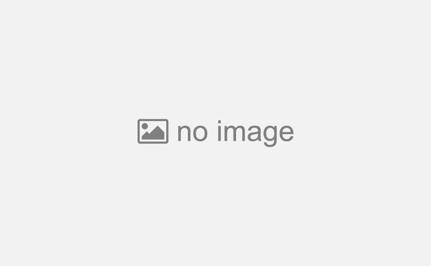
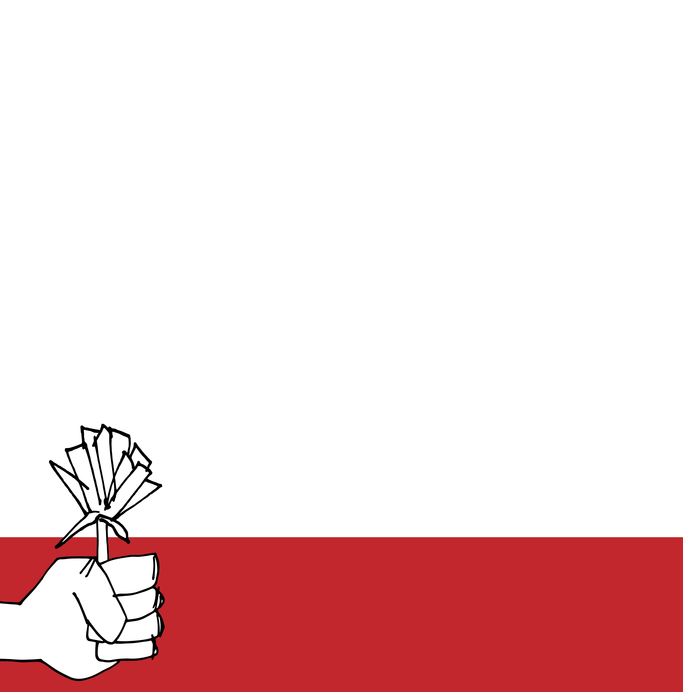

Ini adalah situs web tempat Anda dapat menambahkan foto ke bingkai.
Silahkan unggah gambar dan klik pratinjau lalu unduh, aplikasi ini akan otomatis menggabungkan unggahan gambar yang Anda pilih.
 
Tambahkan tampilan yang disesuaikan ke profil Facebook hanya dalam beberapa langkah.
Buat bingkai di sini untuk teman dan pengikut Anda menggunakan bingkai karya seni original Anda sendiri atau pilih dari bingkai kami.